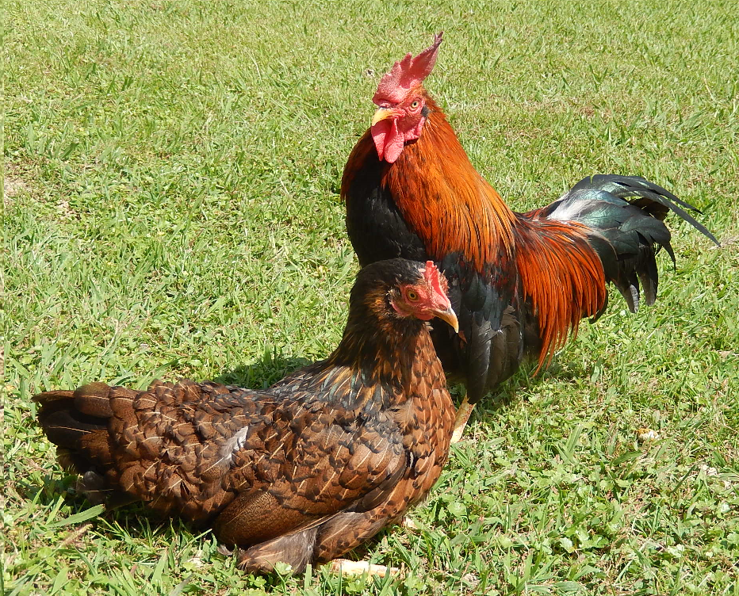

<a href="https://commons.wikimedia.org/wiki/File:Ryujin.tif?page=1">Japanese native chickens</a> © 2017年10月9日 by <a href="https://commons.wikimedia.org/w/index.php?title=User:%E7%AB%B9%E4%B9%8B%E5%86%85_%E6%83%87&action=edit&redlink=1">竹之内 惇</a> is licensed under <a href="https://creativecommons.org/licenses/by-sa/4.0/">CC BY-SA 4.0</a>